本书作者：测试开发刚哥，文章版权归个人所有，未经授权请勿转载。
消息队列
RabbitMQ 是一个消息队列，它能够接收和转发消息。这个过程就像寄快递一样，把物件打包给快递小哥，快递小哥会负责把物件派送到正确的地址。
生产者和消费者
生产者就是用来生产消息（发送消息）的：

消费者就是用来消费消息（接收消息）的：

在生产者和消费者之间的就是消息队列：

它相当于消息缓冲区，最多能存储多少数据只受限于机器的内存和磁盘。多个生产者可以发送消息给同一个队列，多个消费者也可以从同一个队列接收消息。
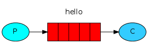
Windows 安装 RabbitMQ
参考 mall 商城学习教程的 RabbitMQ 部分内容：
http://www.macrozheng.com/#/architect/mall_arch_09?id=rabbitmq
原文中rabbitmq-server-3.7.14.exe下载地址失效了，改从这里下载：
https://github.com/rabbitmq/rabbitmq-server/releases/tag/v3.7.14
安装完成后，确认服务已开启：

进入 RabbitMQ 安装目录下的 sbin 目录：

在地址栏输入 cmd 并回车启动命令行，然后输入以下命令启动管理功能：
rabbitmq-plugins enable rabbitmq_management
RabbitMQ 运行在本地机器上：
http://localhost:15672/
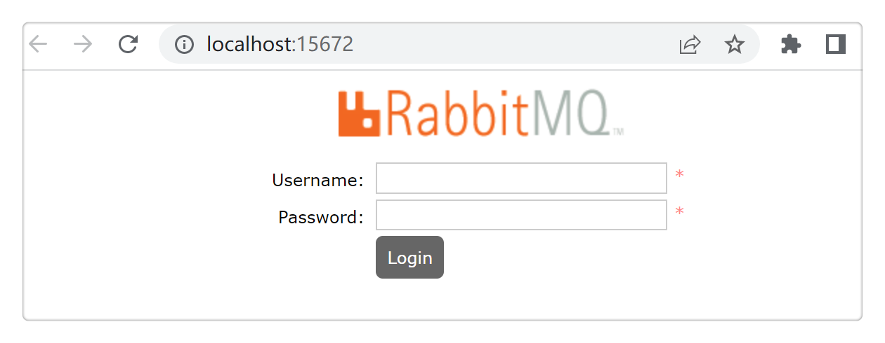
默认用户名密码为 guest / guest：

Java 客户端
amqp-client-5.7.1.jar是 RabbitMQ 官方提供的 Java 客户端：
https://www.rabbitmq.com/tutorials/tutorial-one-java.html
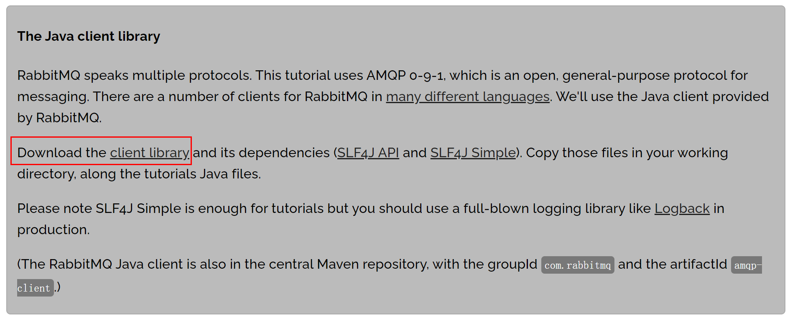
既可以直接下载 jar 包，也可以在 Maven 中添加依赖：
<dependency>
<groupId>com.rabbitmq</groupId>
<artifactId>amqp-client</artifactId>
<version>5.14.2</version>
</dependency>
生产消息
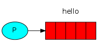
导包：
import com.rabbitmq.client.ConnectionFactory;
import com.rabbitmq.client.Connection;
import com.rabbitmq.client.Channel;
创建类 Send，定义队列名为 hello：
public class Send {
private final static String QUEUE_NAME = "hello";
public static void main(String[] argv) throws Exception {
...
}
}
建立连接：
ConnectionFactory factory = new ConnectionFactory();
factory.setHost("localhost");
try (Connection connection = factory.newConnection();
Channel channel = connection.createChannel()) {
}
代码中创建了一个 Connection 实例和一个 Channel 实例，它们都用 try 语句包裹了起来，这是因为 Connection 和 Channel 类都实现了java.io.Closeable，try 语句会自动关闭连接。
声明消息队列，并发送Hello World!消息到队列中：
channel.queueDeclare(QUEUE_NAME, false, false, false, null);
String message = "Hello World!";
channel.basicPublish("", QUEUE_NAME, null, message.getBytes());
System.out.println(" [x] Sent '" + message + "'");
声明消息队列是个幂等操作，重复声明不会重复创建队列。
消息体是字节数组（byte array）。
Send.java完整代码：
https://github.com/rabbitmq/rabbitmq-tutorials/blob/master/java/Send.java
import com.rabbitmq.client.Channel;
import com.rabbitmq.client.Connection;
import com.rabbitmq.client.ConnectionFactory;
import java.nio.charset.StandardCharsets;
public class Send {
private final static String QUEUE_NAME = "hello";
public static void main(String[] argv) throws Exception {
ConnectionFactory factory = new ConnectionFactory();
factory.setHost("localhost");
try (Connection connection = factory.newConnection();
Channel channel = connection.createChannel()) {
channel.queueDeclare(QUEUE_NAME, false, false, false, null);
String message = "Hello World!";
channel.basicPublish("", QUEUE_NAME, null, message.getBytes(StandardCharsets.UTF_8));
System.out.println(" [x] Sent '" + message + "'");
}
}
}
消费消息
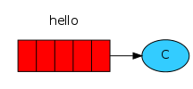
消费消息的代码跟生产消息的代码类似，也需要导包，建立连接：
import com.rabbitmq.client.Channel;
import com.rabbitmq.client.Connection;
import com.rabbitmq.client.ConnectionFactory;
import com.rabbitmq.client.DeliverCallback;
public class Recv {
private final static String QUEUE_NAME = "hello";
public static void main(String[] argv) throws Exception {
ConnectionFactory factory = new ConnectionFactory();
factory.setHost("localhost");
Connection connection = factory.newConnection();
Channel channel = connection.createChannel();
channel.queueDeclare(QUEUE_NAME, false, false, false, null);
System.out.println(" [*] Waiting for messages. To exit press CTRL+C");
}
}
消费者也声明了一个消息队列，因为有可能消费者比生产者先启动。这样能确保消费消息时，有队列存在。
消费者没有用 try 语句，因为消费者一直在异步监听消息，如果把连接关闭了，它就没法消费了。
导包中有个DeliverCallback，通过它就能消费消息：
DeliverCallback deliverCallback = (consumerTag, delivery) -> {
String message = new String(delivery.getBody(), "UTF-8");
System.out.println(" [x] Received '" + message + "'");
};
channel.basicConsume(QUEUE_NAME, true, deliverCallback, consumerTag -> { });
因为发送消息和接收消息都是异步的，所以它叫做，callback，回调。
Recv.java完整代码：
https://github.com/rabbitmq/rabbitmq-tutorials/blob/master/java/Recv.java
import com.rabbitmq.client.Channel;
import com.rabbitmq.client.Connection;
import com.rabbitmq.client.ConnectionFactory;
import com.rabbitmq.client.DeliverCallback;
public class Recv {
private final static String QUEUE_NAME = "hello";
public static void main(String[] argv) throws Exception {
ConnectionFactory factory = new ConnectionFactory();
factory.setHost("localhost");
Connection connection = factory.newConnection();
Channel channel = connection.createChannel();
channel.queueDeclare(QUEUE_NAME, false, false, false, null);
System.out.println(" [*] Waiting for messages. To exit press CTRL+C");
DeliverCallback deliverCallback = (consumerTag, delivery) -> {
String message = new String(delivery.getBody(), StandardCharsets.UTF_8);
System.out.println(" [x] Received '" + message + "'");
};
channel.basicConsume(QUEUE_NAME, true, deliverCallback, consumerTag -> { });
}
}
运行效果
运行Send.java生产消息后，能看到 RabbitMQ 后台已经有 1 条消息：
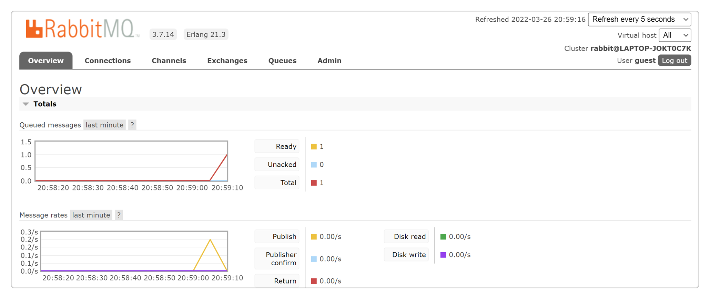
和 1 个消息队列：
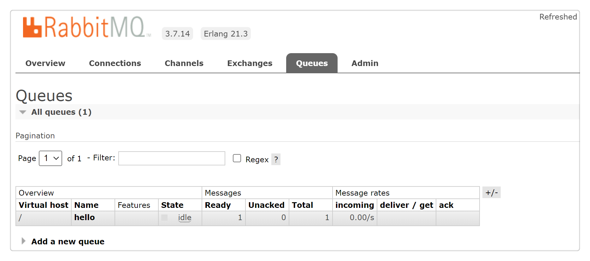
并且发送完成后就断开了连接。
运行Recv.java消费消息后，能看到队列中已经没有消息了：
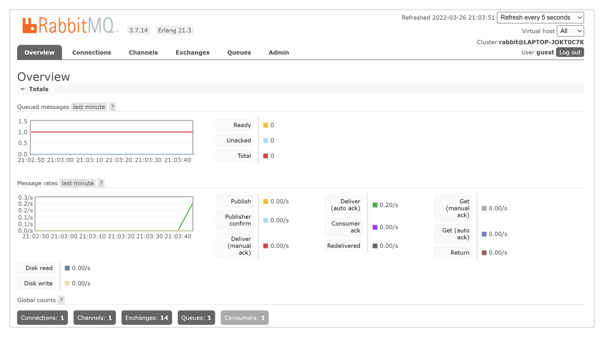
而消费者仍然保持着连接，持续监控新消息。如果把消费者停掉，连接就会断开。
从消息队列中能看到整个过程如下图所示：
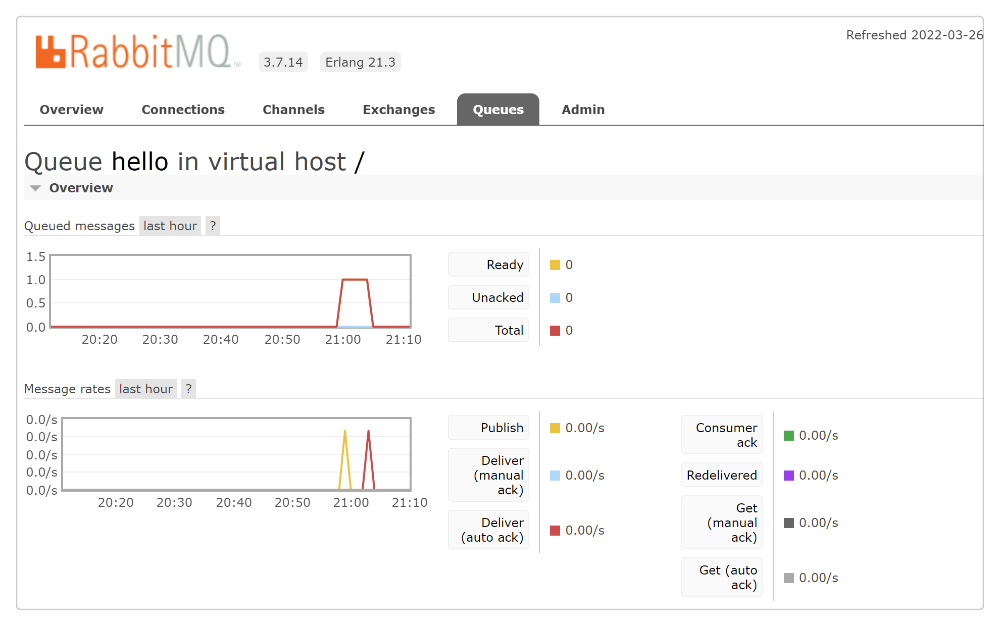
任务分发
任务分发是把多个任务扔进队列，然后分发给多个 worker 来执行。之所以要用队列来实现，是因为任务处理需要一定时长，如果一直等待会导致阻塞，而异步把任务排到队列里，就能加快分发，在取出任务时，也能根据各个 worker 负载情况，均衡分配。尤其是在 Web 应用中，HTTP 连接短暂就会断开，异步处理就特别适用。排队比蜂拥而至办事效率更高。
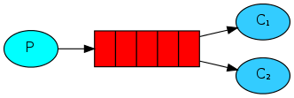
实现任务分发，新建NewTask.java发送消息：
String message = String.join(" ", argv);
channel.basicPublish("", "hello", null, message.getBytes());
System.out.println(" [x] Sent '" + message + "'");
用 message 来模拟任务。
新建Worker.java接收消息：
DeliverCallback deliverCallback = (consumerTag, delivery) -> {
String message = new String(delivery.getBody(), "UTF-8");
System.out.println(" [x] Received '" + message + "'");
try {
doWork(message);
} finally {
System.out.println(" [x] Done");
}
};
boolean autoAck = true; // acknowledgment is covered below
channel.basicConsume(TASK_QUEUE_NAME, autoAck, deliverCallback, consumerTag -> { });
private static void doWork(String task) throws InterruptedException {
for (char ch: task.toCharArray()) {
if (ch == '.') Thread.sleep(1000);
}
}
doWrok()模拟任务处理，用.来表示时长，hello...就代表要处理 3 秒。
然后在 2 个 shell 启动 2 个 worker：
## shell 1
java -cp $CP Worker
## => [*] Waiting for messages. To exit press CTRL+C
## shell 2
java -cp $CP Worker
## => [*] Waiting for messages. To exit press CTRL+C
发送 5 条任务：
## shell 3
java -cp $CP NewTask First message.
## => [x] Sent 'First message.'
java -cp $CP NewTask Second message..
## => [x] Sent 'Second message..'
java -cp $CP NewTask Third message...
## => [x] Sent 'Third message...'
java -cp $CP NewTask Fourth message....
## => [x] Sent 'Fourth message....'
java -cp $CP NewTask Fifth message.....
## => [x] Sent 'Fifth message.....'
worker 的处理情况如下：
java -cp $CP Worker
## => [*] Waiting for messages. To exit press CTRL+C
## => [x] Received 'First message.'
## => [x] Received 'Third message...'
## => [x] Received 'Fifth message.....'
java -cp $CP Worker
## => [*] Waiting for messages. To exit press CTRL+C
## => [x] Received 'Second message..'
## => [x] Received 'Fourth message....'
任务是循环调度的，worker1 总是处理奇数序列的任务，worker2 总是处理偶数序列的任务。
消息确认
RabbitMQ 支持消息确认，consumer 在接收到消息并处理后，会回传一个 ack 给 producer，告诉 RabbitMQ 这条消息已经接收成功了。它的好处是能防止 worker 挂掉而丢失消息，因为假如 producer 没有收到消息确认，它会保留这条消息，重新发送给其他 worker。消息确认过程默认有 30 秒的超时时间，超过 30 秒没有收到消息确认，就会重试。
在代码中有个默认设置：
boolean autoAck = true;
channel.basicConsume(TASK_QUEUE_NAME, autoAck, deliverCallback, consumerTag -> { });
autoAck 表示自动确认，在消息发送出去以后，就自动确认了。这就起不到防止消息丢失的效果，所以通常会设置为：
boolean autoAck = false;
消息持久化
RabbitMQ 重启以后，所有的队列和消息都会丢失，消息持久化能保留这些数据，在重启后恢复所有的队列和消息。
队列持久到用到了 durable 参数：
boolean durable = true;
channel.queueDeclare("task_queue", durable, false, false, null);
需要注意的是，修改队列的参数必须重新命名新的队列，因为 RabbitMQ 不支持对现有队列的参数进行修改。
消息持久化用到了 MessageProperties：
import com.rabbitmq.client.MessageProperties;
channel.basicPublish("", "task_queue",
MessageProperties.PERSISTENT_TEXT_PLAIN,
message.getBytes());
均衡调度
均衡调度是根据 worker 负载情况来合理分配任务。前面实现的任务分发是循环调度的，worker1 总是处理奇数序列的任务，worker2 总是处理偶数序列的任务。假如奇数序列的任务始终比偶数序列的任务繁忙，处理起来耗时长，那么就会导致 worker1 一直繁忙而 worker2 处于空闲。这显然不是很合理。
这是因为 RabbitMQ 默认只是盲目的将第 n 个消息发给第 n 个 consumer，而不会去管有多少个未确认的消息数量。
RabbitMQ 提供了 prefetchCount 参数来实现均衡调度：
int prefetchCount = 1;
channel.basicQos(prefetchCount);
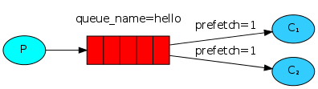
通过设置 prefetchCount 为 1，RabbitMQ 一次只会给一个 worker 分发一条消息，假如某个 worker 比较繁忙，那么只会等它处理完成回传消息确认（Message acknowledgment）后，才会分发新消息给它。
完整代码
NewTask.java
import com.rabbitmq.client.Channel;
import com.rabbitmq.client.Connection;
import com.rabbitmq.client.ConnectionFactory;
import com.rabbitmq.client.MessageProperties;
public class NewTask {
private static final String TASK_QUEUE_NAME = "task_queue";
public static void main(String[] argv) throws Exception {
ConnectionFactory factory = new ConnectionFactory();
factory.setHost("localhost");
try (Connection connection = factory.newConnection();
Channel channel = connection.createChannel()) {
channel.queueDeclare(TASK_QUEUE_NAME, true, false, false, null);
String message = String.join(" ", argv);
channel.basicPublish("", TASK_QUEUE_NAME,
MessageProperties.PERSISTENT_TEXT_PLAIN,
message.getBytes("UTF-8"));
System.out.println(" [x] Sent '" + message + "'");
}
}
}
Worker.java
import com.rabbitmq.client.Channel;
import com.rabbitmq.client.Connection;
import com.rabbitmq.client.ConnectionFactory;
import com.rabbitmq.client.DeliverCallback;
public class Worker {
private static final String TASK_QUEUE_NAME = "task_queue";
public static void main(String[] argv) throws Exception {
ConnectionFactory factory = new ConnectionFactory();
factory.setHost("localhost");
final Connection connection = factory.newConnection();
final Channel channel = connection.createChannel();
channel.queueDeclare(TASK_QUEUE_NAME, true, false, false, null);
System.out.println(" [*] Waiting for messages. To exit press CTRL+C");
channel.basicQos(1);
DeliverCallback deliverCallback = (consumerTag, delivery) -> {
String message = new String(delivery.getBody(), "UTF-8");
System.out.println(" [x] Received '" + message + "'");
try {
doWork(message);
} finally {
System.out.println(" [x] Done");
channel.basicAck(delivery.getEnvelope().getDeliveryTag(), false);
}
};
channel.basicConsume(TASK_QUEUE_NAME, false, deliverCallback, consumerTag -> { });
}
private static void doWork(String task) {
for (char ch : task.toCharArray()) {
if (ch == '.') {
try {
Thread.sleep(1000);
} catch (InterruptedException _ignored) {
Thread.currentThread().interrupt();
}
}
}
}
}
发布订阅
发布订阅是发送一条消息给多个 consumer 的一对多模式。不同于任务分发的一个消息只发送给一个 worker 的一对一模式。
接下来将实现一个日志系统来说明发布订阅的一对多模式，它由 2 个程序组成，第一个程序负责提交日志消息，第二个程序负责接收消息并打印出来。第二个程序有 2 个实例，第 1 个实例接收消息存储到磁盘，同时第 2 个实例把日志打印到屏幕。
Exchange
回顾几个概念：
-
producer：生产者，发送消息。
-
queue：队列，消息缓存。
-
consumer：消费者，接收消息。
实际上 producer 并不会直接给 queue 发送消息，它并不知道消息会发给哪个 queue。在 producer 和 queue 中间，有一个叫做 Exchange 的东西：
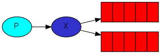
producer 只会把消息发送给 Exchage，而 Exchange 的作用就是定义消息转发规则：
-
消息发给一个队列？
-
消息发给多个队列？
-
消息应该被忽略掉？
-
等等等
Exchange 有几种类型：direct, topic, headers 和 fanout，这里讨论最后一个 fanout，它会把所有消息广播给所有队列。
创建命名为logs的 Exchange：
channel.exchangeDeclare("logs", "fanout");
发送消息到 Exchange：
channel.basicPublish( "logs", "", null, message.getBytes());
还记得之前的代码么：
channel.basicPublish("", "hello", null, message.getBytes());
第一个参数为空字符串，这并不是说没有 Exchange，而是使用了 RabbitMQ 默认的 Exchange。
有 Exchange 的消息队列，才是真正的消息队列。
临时队列
临时队列主要用来临时传输消息。在将要实现的日志系统中，因为是广播所有消息，所以并不关心转发给哪个具体的队列，只要有个队列就行。并且每次连接到队列时，都希望队列里面是空的，没有老数据。在 consumer 断开连接后，队列也能自动删除。
可以通过无参数的queueDeclare()来实现临时队列：
String queueName = channel.queueDeclare().getQueue();
这样能创建一个非持久化的、独占的、自动删除的队列。它的队列名是个随机名字，比如amq.gen-JzTY20BRgKO-HjmUJj0wLg。
绑定
Exchange 需要跟队列绑定：
channel.queueBind(queueName, "logs", "");
绑定后 Exchange 才知道把消息发给哪些队列。

可以使用命令查看 RabbitMQ 存在哪些绑定：
rabbitmqctl list_bindings
完整代码
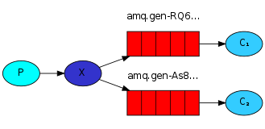
EmitLog.java
public class EmitLog {
private static final String EXCHANGE_NAME = "logs";
public static void main(String[] argv) throws Exception {
ConnectionFactory factory = new ConnectionFactory();
factory.setHost("localhost");
try (Connection connection = factory.newConnection();
Channel channel = connection.createChannel()) {
channel.exchangeDeclare(EXCHANGE_NAME, "fanout");
String message = argv.length < 1 ? "info: Hello World!" :
String.join(" ", argv);
channel.basicPublish(EXCHANGE_NAME, "", null, message.getBytes("UTF-8"));
System.out.println(" [x] Sent '" + message + "'");
}
}
}
producer 并不需要定义队列，它只把消息发给 Exchange 即可。
ReceiveLogs.java
import com.rabbitmq.client.Channel;
import com.rabbitmq.client.Connection;
import com.rabbitmq.client.ConnectionFactory;
import com.rabbitmq.client.DeliverCallback;
public class ReceiveLogs {
private static final String EXCHANGE_NAME = "logs";
public static void main(String[] argv) throws Exception {
ConnectionFactory factory = new ConnectionFactory();
factory.setHost("localhost");
Connection connection = factory.newConnection();
Channel channel = connection.createChannel();
channel.exchangeDeclare(EXCHANGE_NAME, "fanout");
String queueName = channel.queueDeclare().getQueue();
channel.queueBind(queueName, EXCHANGE_NAME, "");
System.out.println(" [*] Waiting for messages. To exit press CTRL+C");
DeliverCallback deliverCallback = (consumerTag, delivery) -> {
String message = new String(delivery.getBody(), "UTF-8");
System.out.println(" [x] Received '" + message + "'");
};
channel.basicConsume(queueName, true, deliverCallback, consumerTag -> { });
}
}
运行效果
配置环境变量：
mac：
export CP=.:amqp-client-5.7.1.jar:slf4j-api-1.7.26.jar:slf4j-simple-1.7.26.jar
windows：
set CP=.;amqp-client-5.7.1.jar;slf4j-api-1.7.26.jar;slf4j-simple-1.7.26.jar
mac 用$CP，windows 用%CP。
编译：
javac -cp $CP EmitLog.java ReceiveLogs.java
保存日志到本地文件：
java -cp $CP ReceiveLogs > logs_from_rabbit.log
打印日志到屏幕：
java -cp $CP ReceiveLogs
此时就建立了 2 个临时队列，通过命令可以查看 Exchange 和队列的绑定：
sudo rabbitmqctl list_bindings
## => Listing bindings ...
## => logs exchange amq.gen-JzTY20BRgKO-HjmUJj0wLg queue []
## => logs exchange amq.gen-vso0PVvyiRIL2WoV3i48Yg queue []
## => ...done.
发送消息：
java -cp $CP EmitLog
就能看到 2 个 consumer 在同时消费消息了，一个会保存日志到本地文件，一个会打印日志到屏幕。
消息路由
消息路由是指Exchange 把某些消息转发到指定队列。已经实现的日志系统是把所有消息都转发给了所有队列，接下来将实现只把 error 日志保存到本地文件，把 info、warning 和 error 都打印到屏幕。
binding key
在给 Exchange 和 Queue 绑定的时候，可以指定第三个参数：
channel.queueBind(queueName, EXCHANGE_NAME, "black");
这个参数叫做binding key。binding key 的意义是根据 Exchange 来决定的，比如fanout类型的 Exchange 会忽略 binding key 而把所有消息转发给所有队列，而direct类型的 Exchange 会查找 binding key 匹配的routing key，然后把消息转发到匹配的队列中去。以下图示能说明这个匹配过程：
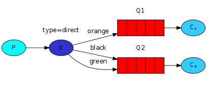
Exchange X的 type 是direct类型，它绑定了 2 个队列 Q1 和 Q2。队列 Q1 有 1 个 binding key orange，队列 Q2 有 2 个 bingding key black和green。Exchange 会把 routing key 为 orange 的消息转发给 Q1，而把 routing key 为 black 或 green 的消息转发给 Q2。其他消息则会被 Exchange 忽略。
1 个 Exchange 能够使用相同的 binding key 跟多个队列进行绑定：
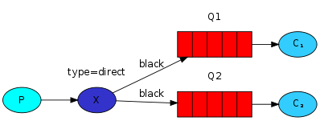
如图所示，Exchange 会把带有 routing key 为black的消息同时转发给 Q1 和 Q2。
代码实现
创建 Exchange：
channel.exchangeDeclare(EXCHANGE_NAME, "direct");
发送消息：
channel.basicPublish(EXCHANGE_NAME, severity, null, message.getBytes());
severity 是info、warning、error三者其中之一。
绑定 Exchange 和队列：
String queueName = channel.queueDeclare().getQueue();
for(String severity : argv){
channel.queueBind(queueName, EXCHANGE_NAME, severity);
}
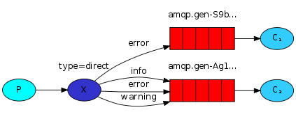
EmitLogDirect.java完整代码如下：
https://github.com/rabbitmq/rabbitmq-tutorials/blob/master/java/EmitLogDirect.java
import com.rabbitmq.client.Channel;
import com.rabbitmq.client.Connection;
import com.rabbitmq.client.ConnectionFactory;
public class EmitLogDirect {
private static final String EXCHANGE_NAME = "direct_logs";
public static void main(String[] argv) throws Exception {
ConnectionFactory factory = new ConnectionFactory();
factory.setHost("localhost");
try (Connection connection = factory.newConnection();
Channel channel = connection.createChannel()) {
channel.exchangeDeclare(EXCHANGE_NAME, "direct");
String severity = getSeverity(argv);
String message = getMessage(argv);
channel.basicPublish(EXCHANGE_NAME, severity, null, message.getBytes("UTF-8"));
System.out.println(" [x] Sent '" + severity + "':'" + message + "'");
}
}
//..
}
ReceiveLogsDirect.java完整代码如下：
https://github.com/rabbitmq/rabbitmq-tutorials/blob/master/java/ReceiveLogsDirect.java
import com.rabbitmq.client.*;
public class ReceiveLogsDirect {
private static final String EXCHANGE_NAME = "direct_logs";
public static void main(String[] argv) throws Exception {
ConnectionFactory factory = new ConnectionFactory();
factory.setHost("localhost");
Connection connection = factory.newConnection();
Channel channel = connection.createChannel();
channel.exchangeDeclare(EXCHANGE_NAME, "direct");
String queueName = channel.queueDeclare().getQueue();
if (argv.length < 1) {
System.err.println("Usage: ReceiveLogsDirect [info] [warning] [error]");
System.exit(1);
}
for (String severity : argv) {
channel.queueBind(queueName, EXCHANGE_NAME, severity);
}
System.out.println(" [*] Waiting for messages. To exit press CTRL+C");
DeliverCallback deliverCallback = (consumerTag, delivery) -> {
String message = new String(delivery.getBody(), "UTF-8");
System.out.println(" [x] Received '" +
delivery.getEnvelope().getRoutingKey() + "':'" + message + "'");
};
channel.basicConsume(queueName, true, deliverCallback, consumerTag -> { });
}
}
运行效果
编译：
javac -cp $CP ReceiveLogsDirect.java EmitLogDirect.java
只把 error 日志保存到本地文件：
java -cp $CP ReceiveLogsDirect error > logs_from_rabbit.log
把 info、warning、error 日志都输出到屏幕：
java -cp $CP ReceiveLogsDirect info warning error
## => [*] Waiting for logs. To exit press CTRL+C
发送 error 消息：
java -cp $CP EmitLogDirect error "Run. Run. Or it will explode."
## => [x] Sent 'error':'Run. Run. Or it will explode.'
Topic
topic 是一种带有特殊含义的 routing key。topic 不是随意命名的，它由一个或多个单词构成，以.点号分隔，比如stock.usd.nyse、nyse.vmw、quick.orange.rabbit，且长度限制了 255 字节。在前面的日志系统中，已经实现了按照日志级别（info/warning/error）进行消息路由，但是比较单一。接下来将通过 topic 来实现既能按照日志级别，也能按照日志来源（auth/cron/kern）进行路由。
Topic Exchange
topic类型的 Exchange 就是用来支持 Topic 的。它跟direct类型的 Exchange 比较类似，只是对于 routing key 的命名有要求，并且支持两种特殊字符：
-
*代表 1 个单词。 -
#代表 0 个或多个单词。
通过以下图示可以直观看到topic类型的 Exchange 是如何路由的：
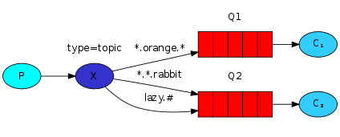
所有消息都是<speed>.<colour>.<species>格式的，分别代表速度、颜色、物种。队列 Q1 的 binding key 是*.orange.*，队列 Q2 的 binding key 是*.*.rabbit和lazy.#。
- 带有
quick.orange.rabbit和lazy.orange.elephant的 routing key 的消息会转发到 Q1 和 Q2。 - 带有
quick.orange.foxrouting key 的消息只会转发到 Q1。 lazy.brown.fox只会转发到 Q2。lazy.pink.rabbit只会转发到 Q2 一次，虽然它同时命中了 2 个 binding key，但还是只会转发 1 次。quick.brown.fox会被 Exchange 忽视，不转发给任何队列。- 只传一个单词
orange或者四个单词quick.orange.male.rabbit，会被 Exchange 忽视。 - 四个单词
lazy.orange.male.rabbit，只转发给 Q2。
topic类型的 Exchange 是很灵活的，如果 binding key 设置为#，那么它就相当于fanout类型，转发所有消息。如果 binding key 里面不包含*或者#，那么它就相当于direct类型，转发指定消息。
完整代码
EmitLogTopic.java
https://github.com/rabbitmq/rabbitmq-tutorials/blob/master/java/EmitLogTopic.java
import com.rabbitmq.client.Channel;
import com.rabbitmq.client.Connection;
import com.rabbitmq.client.ConnectionFactory;
public class EmitLogTopic {
private static final String EXCHANGE_NAME = "topic_logs";
public static void main(String[] argv) throws Exception {
ConnectionFactory factory = new ConnectionFactory();
factory.setHost("localhost");
try (Connection connection = factory.newConnection();
Channel channel = connection.createChannel()) {
channel.exchangeDeclare(EXCHANGE_NAME, "topic");
String routingKey = getRouting(argv);
String message = getMessage(argv);
channel.basicPublish(EXCHANGE_NAME, routingKey, null, message.getBytes("UTF-8"));
System.out.println(" [x] Sent '" + routingKey + "':'" + message + "'");
}
}
//..
}
ReceiveLogsTopic.java
https://github.com/rabbitmq/rabbitmq-tutorials/blob/master/java/ReceiveLogsTopic.java
import com.rabbitmq.client.Channel;
import com.rabbitmq.client.Connection;
import com.rabbitmq.client.ConnectionFactory;
import com.rabbitmq.client.DeliverCallback;
public class ReceiveLogsTopic {
private static final String EXCHANGE_NAME = "topic_logs";
public static void main(String[] argv) throws Exception {
ConnectionFactory factory = new ConnectionFactory();
factory.setHost("localhost");
Connection connection = factory.newConnection();
Channel channel = connection.createChannel();
channel.exchangeDeclare(EXCHANGE_NAME, "topic");
String queueName = channel.queueDeclare().getQueue();
if (argv.length < 1) {
System.err.println("Usage: ReceiveLogsTopic [binding_key]...");
System.exit(1);
}
for (String bindingKey : argv) {
channel.queueBind(queueName, EXCHANGE_NAME, bindingKey);
}
System.out.println(" [*] Waiting for messages. To exit press CTRL+C");
DeliverCallback deliverCallback = (consumerTag, delivery) -> {
String message = new String(delivery.getBody(), "UTF-8");
System.out.println(" [x] Received '" +
delivery.getEnvelope().getRoutingKey() + "':'" + message + "'");
};
channel.basicConsume(queueName, true, deliverCallback, consumerTag -> { });
}
}
topic 的格式是<facility>.<severity>。
运行效果
编译：
javac -cp $CP ReceiveLogsTopic.java EmitLogTopic.java
接收所有日志：
java -cp $CP ReceiveLogsTopic "#"
只接收来源于 kern 的日志：
java -cp $CP ReceiveLogsTopic "kern.*"
只接收 critical 严重级别的日志：
java -cp $CP ReceiveLogsTopic "*.critical"
也可以多重绑定：
java -cp $CP ReceiveLogsTopic "kern.*" "*.critical"
发送日志消息：
java -cp $CP EmitLogTopic "kern.critical" "A critical kernel error"
RPC
RPC 是 Remote Procedure Call 的缩写，远程过程调用，比如在远程机器中执行函数，并拿到返回结果。RabbitMQ 能用来实现 RPC 服务。接下来就简单实现一个调用生成斐波那契数列的 RPC 服务。
整体设计如图所示：
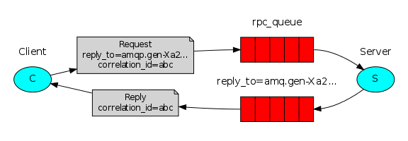
Client 发送 RPC 请求到 rpc_queue 里面，然后阻塞，等待返回。在请求中会指定一个回调队列的地址，通过 reply_to 来指定。Server 从 rpc_queue 读取消息进行处理，根据 reply_to 把响应放到回调队列中。请求中还设置了一个 correlation_id，Client 在收到响应时，根据这个关联 id 来匹配，匹配上的消息才进行接收。
correlation_id 匹配不上的消息会忽略，为什么是忽略而不是抛出异常呢？因为 RPC Server 有可能发返回 ack 确认前就宕机，当它重启以后，会重新处理请求消息，从而导致消息重复处理。对于 RPC 来说最好是能够让重复场景是幂等的。
代码实现
RPCServer.java
https://github.com/rabbitmq/rabbitmq-tutorials/blob/master/java/RPCServer.java
import com.rabbitmq.client.*;
public class RPCServer {
private static final String RPC_QUEUE_NAME = "rpc_queue";
private static int fib(int n) {
if (n == 0) return 0;
if (n == 1) return 1;
return fib(n - 1) + fib(n - 2);
}
public static void main(String[] argv) throws Exception {
ConnectionFactory factory = new ConnectionFactory();
factory.setHost("localhost");
try (Connection connection = factory.newConnection();
Channel channel = connection.createChannel()) {
channel.queueDeclare(RPC_QUEUE_NAME, false, false, false, null);
channel.queuePurge(RPC_QUEUE_NAME);
//设置n个Server进程
channel.basicQos(1);
System.out.println(" [x] Awaiting RPC requests");
Object monitor = new Object();
DeliverCallback deliverCallback = (consumerTag, delivery) -> {
AMQP.BasicProperties replyProps = new AMQP.BasicProperties
.Builder()
.correlationId(delivery.getProperties().getCorrelationId())
.build();
String response = "";
try {
String message = new String(delivery.getBody(), "UTF-8");
int n = Integer.parseInt(message);
System.out.println(" [.] fib(" + message + ")");
response += fib(n);
} catch (RuntimeException e) {
System.out.println(" [.] " + e.toString());
} finally {
channel.basicPublish("", delivery.getProperties().getReplyTo(), replyProps, response.getBytes("UTF-8"));
channel.basicAck(delivery.getEnvelope().getDeliveryTag(), false);
// RabbitMq consumer worker thread notifies the RPC server owner thread
synchronized (monitor) {
monitor.notify();
}
}
};
channel.basicConsume(RPC_QUEUE_NAME, false, deliverCallback, (consumerTag -> { }));
// Wait and be prepared to consume the message from RPC client.
while (true) {
synchronized (monitor) {
try {
monitor.wait();
} catch (InterruptedException e) {
e.printStackTrace();
}
}
}
}
}
}
RPCClient.java
https://github.com/rabbitmq/rabbitmq-tutorials/blob/master/java/RPCClient.java
import com.rabbitmq.client.AMQP;
import com.rabbitmq.client.Channel;
import com.rabbitmq.client.Connection;
import com.rabbitmq.client.ConnectionFactory;
import java.io.IOException;
import java.util.UUID;
import java.util.concurrent.ArrayBlockingQueue;
import java.util.concurrent.BlockingQueue;
import java.util.concurrent.TimeoutException;
public class RPCClient implements AutoCloseable {
private Connection connection;
private Channel channel;
private String requestQueueName = "rpc_queue";
public RPCClient() throws IOException, TimeoutException {
ConnectionFactory factory = new ConnectionFactory();
factory.setHost("localhost");
connection = factory.newConnection();
channel = connection.createChannel();
}
public static void main(String[] argv) {
try (RPCClient fibonacciRpc = new RPCClient()) {
for (int i = 0; i < 32; i++) {
String i_str = Integer.toString(i);
System.out.println(" [x] Requesting fib(" + i_str + ")");
String response = fibonacciRpc.call(i_str);
System.out.println(" [.] Got '" + response + "'");
}
} catch (IOException | TimeoutException | InterruptedException e) {
e.printStackTrace();
}
}
public String call(String message) throws IOException, InterruptedException {
final String corrId = UUID.randomUUID().toString();
String replyQueueName = channel.queueDeclare().getQueue();
AMQP.BasicProperties props = new AMQP.BasicProperties
.Builder()
.correlationId(corrId)
.replyTo(replyQueueName)
.build();
channel.basicPublish("", requestQueueName, props, message.getBytes("UTF-8"));
//在响应到达前挂起main阻塞等待，1表示只等待1个响应
final BlockingQueue<String> response = new ArrayBlockingQueue<>(1);
String ctag = channel.basicConsume(replyQueueName, true, (consumerTag, delivery) -> {
if (delivery.getProperties().getCorrelationId().equals(corrId)) {
response.offer(new String(delivery.getBody(), "UTF-8"));
}
}, consumerTag -> {
});
String result = response.take();
channel.basicCancel(ctag);
return result;
}
public void close() throws IOException {
connection.close();
}
}
运行效果
编译：
javac -cp $CP RPCClient.java RPCServer.java
启动 Server：
java -cp $CP RPCServer
## => [x] Awaiting RPC requests
运行 Client：
java -cp $CP RPCClient
## => [x] Requesting fib(30)
如果 Server 处理慢，那么可以再在控制台启动新的 Server 来消费。
注意，本文的示例都只是为了演示而编写的，不是真正意义上的实现。
对于可靠的消息确认，RabbitMQ 提供了一个扩展，感兴趣的话可以阅读：
https://www.rabbitmq.com/tutorials/tutorial-seven-java.html

参考资料：